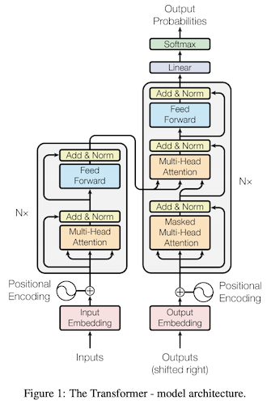
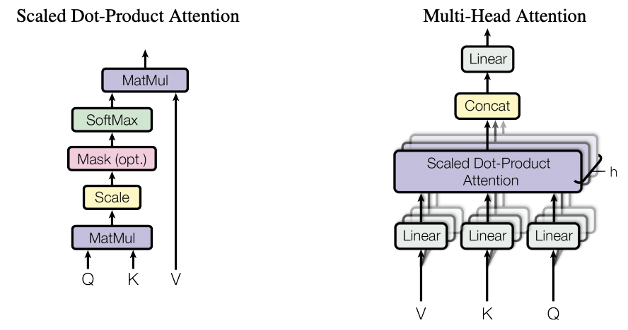
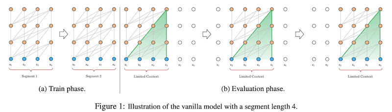
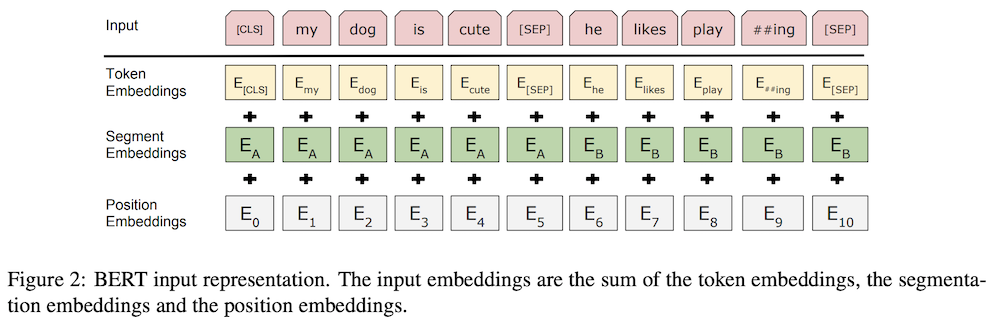
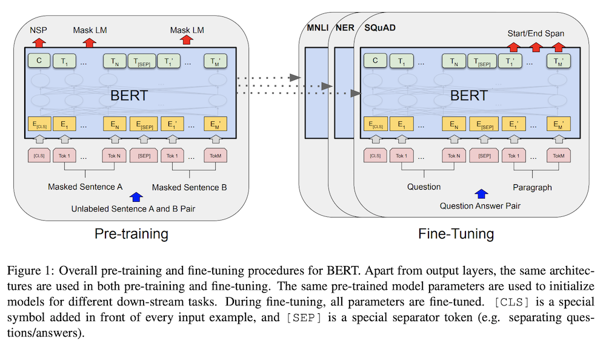

NLP Concepts and Papers
Resources: paper, illustrated guide, Annotated Transformer
Top Advantages
- removes the recurrence
- easier to parallelise
- better long term dependencies
- resolves vanishing gradient problem with RNNs
New things
- Scaled-Dot Product Attention
- We have Query, Key and Values. Get a weighted sum of values depending on the relevance of keys with the query
- Multi-Head Attention
- do scaled dot product but for multiple projections of Q,K and V in parallel and concat them
- allows calculations over different representation spaces
- position encoding method
Model Summary
- Uses a new position encoding technique to preserve order - uses absolute positions
- Use a few layers of multi-head attention on input over input (self-attention with ) in encoder.
- Use this in each 'cell' of decoder.
- each cell of decoder has Self-attention in output (masked to avoid taking information from words ahead in the sentence), then attention over encoding with self-attention output.


Notable Insights
- self-attention
- computationally cheaper than RNN - optimized Matrix Multiplication
- easier to propagate from output to input (Maximum path length is O(1))
- Self-attention allows the model to look at the other words in the input sequence to get a better understanding of a certain word in the sequence. Eg. 'Dog bit it's tail'. 'It' is related to 'Dog'. More here
Limitations
- Can handle only fixed length inputs. So need to split input into chunks
- chunked data -> limited range of dependencies
- if you chunk sentences to feed into transformers, then you have the problem of context fragmentation because a split sentence looses context present in other chunks
- computation cost scales quadratically with sequence length
Questions
- what's the logic behind self-attention, how exactly is it helping? The logic presented only explains the benefit of the attention mechanism which holds true for using the multi-head attention without self attention. What exactly is the intuition here?
- why is masking necessary in transformers? - To make sure output at i depends only on outputs before position i. But WHY is this important? Why not just mask itself?
- Can someone explain their position encoding scheme to me?
- (Solved) How exactly does it avoid recurrence? Because decoder states depend on the encoder finishing it's job -> That's only Layering. If one layer, then it's just two steps of sequential attentions.
Resources: paper
Top Advantanges
- Captures longer-term dependencies
- resolves context fragmentation to some extent
- "Transformer-XL learns dependency that is 80% longer than RNNs and 450% longer than vanilla Transformers, achieves better performance on both short and long sequences, and is up to 1,800+ times faster than vanilla Transformers during evaluation."
New things
- Recurrence mechanism to transformers
- Instead of computing the hidden states from scratch for each new segment, concat/reuse the hidden states obtained in previous segments.
- The reused hidden states serve as memory for the current segment, which builds up a recurrent connection between the segments.
- Thus, information can be propogated -> modeling very long-term dependency becomes possible and solves context fragmentation (3.2 in paper for formal definition)
- Note: Gradient remains within one segment. Only the segment encoding goes to next segment to provide context
- can concat multiple previous segments to increase range of the model (depends on available memory)
- New Relative position encoding
- "avoids temporal confusion", "generalizes to attention lengths longer than the one observed during training"
- instead of using an absolute position encoding, use the relative distance between the positions. Ex. when calculating attention score between xi and xj, use Ri−j (sinusoid encoding matrix) for position instead of the absolute one in original transformers
Model Summary
- In any layer of the encoder, concat the prev-layer output for previous segment to the key and value, then use the layer.
- This combined with relative position encoding enables model to understand the position of the context words relative to current words -> longer dependency

Notable Insights
Misc things
: It is for the LM task.
limitations
- Not pretrained
- computation cost still scales quadratically with sequence length
Questions
- What is sinusoid encoding matrix
- Understand the position encoding used
Resources:
Paper
Top Advantages
- Pretrained on multiple tasks
- computation scales linearly with input seq length as compared to quadratic in transformer
- This attention pattern can be plugged into any pretrained transformer model without the need to change the model architecture: (Eg. they used RoBERTa checkpoint for their model. section 5)
- Was able to run on sequence lengths of 32,256 compared to 512 in BERT
New Things
New Attention mechanism. Combo of two
- Local-context self attention: learn context representations
- global attention: "end task motivated", builds full sentence representations for task
- New custom CUDA kernel TVM for performing the banded matrix multiplications which are not currently supported by DL libraries
Attention Patterns
- Sliding Window
- Attend over a window w around the token
- O(n×w)
- as you stack l layers, the "receptive field" increases (like in CNN) to l×w
- w becomes hyperparameter
- Dilated Window
- use dilated window like in CNN kernels
- increases receptive field without increasing computation
- receptive field becomes l×d×w, scales to thousands of tokens
- Use different values of d for different heads in Multi-Head Attention: small value for local context and large value for longer context
- Global Attention
- For some selected input locations, attend to all locations and all locations attend to that token (symmetric)
- Task specific. Ex, for QA, global for question tokens
- only for a select tokens k<<n, so complexity still remains O(n)
Model Summary
- uses two sets of projects of Q,K,V. One for sliding window and other for global attention - flexible use depending on task
- use different dilations in different projections for sliding window

- LM task: increase window size for upper layers. Dilation only in a small number of heads in upper layers
Notable Insights
- Attention matrix in transformers
- Left-to-right: process chunks from ltr. Good for autoregressive modelling tasks like LM. Looses out when model can benefit from bidirectional context
- Sparse: Don't compute the full n2 attention matrix. ex. Dilated sliding window by BlockSparse in sparse transformer
- can plug in the long version into other transformer models. Script
Misc things
: For LM and long document modelling, paper used character level model.
limitations
Questions
- What is BlockSparse and sparse transformer
- Training strategy of this model for LM (section 4.2)
- TODO:Read up how it is pretrained for different tasks
BERT
Resources
: Paper, Pretrained Model, blog
Top Advantages
- Strong Pretrained model (for both fine-tuning and feature based approach)
- Bidirectional
- single pre-trained model is SOTA for a lot of tasks, beating tasks specific architectures - Unified architecture
- can have bidirectional cross attention between two sentences
New Things
- Deep bidirectional transformers: shows bidirectional pre-training gives better language representation
- MLM - Masked LM
- randomly mask some of the input tokens. Now try to predict these correct vocab id of these tokens using the surrounding context in pretraining
- mask 15% tokens and use softmax only on them. 80% of these are replaced with MASK token, 10% with random token, 10% with original token
- refer to the blog - AppendixA for details
Model Summary
- pretrain on unlabeled data, fine-tune on labeled data for downstream tasks
- Input (see fig2):
- seq of tokens - can be a single sentence, or a sentence pair (<Q,A>)
- begins with [CLS] token
- sparate sentences with [SEP] token and add a sentence embedding indicating Sentence A or Sentence B to each token. Sentence embeddings are similar in concept to token embeddings with a vocabulary of 2.
- Add positional embedding like in transformer

- Training: Train using 2 tasks.
- MLM
- to get word representations
- softmax over masked words to calc loss
- NSP
- use representation corresponding to [CLS] token
- use classificiation layer to predict if next sentence or not

Notable Insights
2 way of applying pre-training
- feature based: used the pretrained representation as additional feature in the new architecture
- Fine-tuning: add some minimal task specific params and use the pre-trained params. Train on the new task and update ALL params.
MLM:
- Models before BERT are restricted because they try to solve the unidirectional task of language modelling.
- new prediction goal for LM training. Allows to use bidirectional models
- without this, a bidirectional model will be able to indirectly see the word it is trying to predict
Misc things
- Output corresponding to token [CLS] to be used for classification tasks (eg. sentiment analysis), token representations to be used for token level tasks (eg. NER)
- Gives great performance when used as features directly - saves a lot of compute during finetuning
- hypothesizes that when the model is fine-tuned directly on the downstream tasks and uses only a very small number of randomly initialized additional parameters, the task specific models can benefit from the larger, more expressive pre-trained representations even when
downstream task data is very small.
limitations
- unput token limit of 512
- converges slowly because loss is calculated only on the masked tokens
Questions
- Don't understand the problem it is solving
- How can it be used for LM?
- Masking - why is it done like it is done
- is the word-to-token embedding fine tuned/pre-trained/transferrable as well or not?
- TODO:Read up how it is fine tuned
TRADE for TOD Systems
Resources
Paper
Top Advantages
- generates dialogue states from utterances using a copy mechanism, facilitating knowledge transfer
when predicting (domain, slot, value) triplets
not encountered during training
- overcomes the problem of exhaustively listing all possible values of all slots (as required by previous models) - generates slot value directly instead of a probability of each value
- over comes lack of knowledge sharing between domains by sharing parameters for all domains. (eg. area slot can be shared between restaurant domain and hotel domain)
- zero shot learning with few examples for new domians withour forgetting old domains
New Things
- parameter sharing between domains
- directly generating slot value
- Utterance encoder
- dialog history utterances to sequence of fixed-length vectors (n utts to n vector representations)
- context enhanced Slot gate:determine if any (domain,slot) value is mentioned. Outputs none, don't care and ptr
- state generator
Model Summary
- Utterance encoder to convert utterances to seq of fixed-length vectors Ht
- state generator decodes multiple output tokens for all (domain,slot) pairs independently
- state generator GRU
- first input is (domain,slot) encoding for each (domain,slot) pair
- at step k, takes in a word embedding to produce a hidden state
- hidden state is mapped to 2 distribution
- over voabulary - hidd * E
- over history - hidd * Ht
- final prob is a weighted sum of these two (combines the two dist) - distribution over vocab
- weight is obtained using a MLP on hidden state, context and word embedding
- context vector is attened over Ht using the distribution over history
- use Slot gate on context to figure out if the value is needed for this (domain, slot) pair
- optimization: cross entropy loss for slot gate and state generator
Notable Insights
Misc things
- achieves state-of-the-art joint goal accuracy of 48.62% for the five domains of MultiWOZ
- achieves 60.58% joint goal accuracy in one of
the zero-shot domains
- three types of copy mechanisms - index based, hard-gated, soft-gated
limitations
Questions
- read up on copy mechanisms!
- What is the word embedding at k step of state generator?
- read up on continual learning techniques - elastic weight consolidation (EWC) and gradient episodic memory (GEM)
Unlikelihood Loss
Resources
paper
Top Advantages
- significant reduction in repitition of ngrams from context (copied from context) and within generated utterance
New Things
- add new term to loss function, which tells the model to
- reduce repitions - penalise is generated token is
- already in utterance
- already in context
- mix of both
- pulls the model distribution of tokens closer to actual human distribution
tags
loss,objective,unlikelihood
Truncated Log Loss
Resources
paper
Top Advantages
New Things
- loss calculations
- rejection sampling
Model Summary
- hot start the model normally on log loss for some batches
- maintain an online estimate of quantile over batches
- remove examples with loss above the quantile
Notable Insights
- Log loss is very sensitive to outliers (check fig1 in paper)
- thus it picks up noise and other irrelevant abberations in data
- Better to optimize for Distinguisability
- indistinguishable generated text is better quality
- problem: challenging to do so
Misc things
limitations
Questions
- Understand rejection sampling
tags
loss, objective, truncated, sensitivity
Other Papers
- TOD Survey(2020): Survey of Task Oriented Dialog Systems. Nicely summarises the problem and demarcates the latest models by the problems they solve.
- Mem2Seq: SOTA model for TOD using KB and history. DID NOT UNDERSTAND the implementation at all.
Template
Resources
Top Advantages
New Things
Model Summary
Notable Insights
Misc things
limitations
Questions
tags